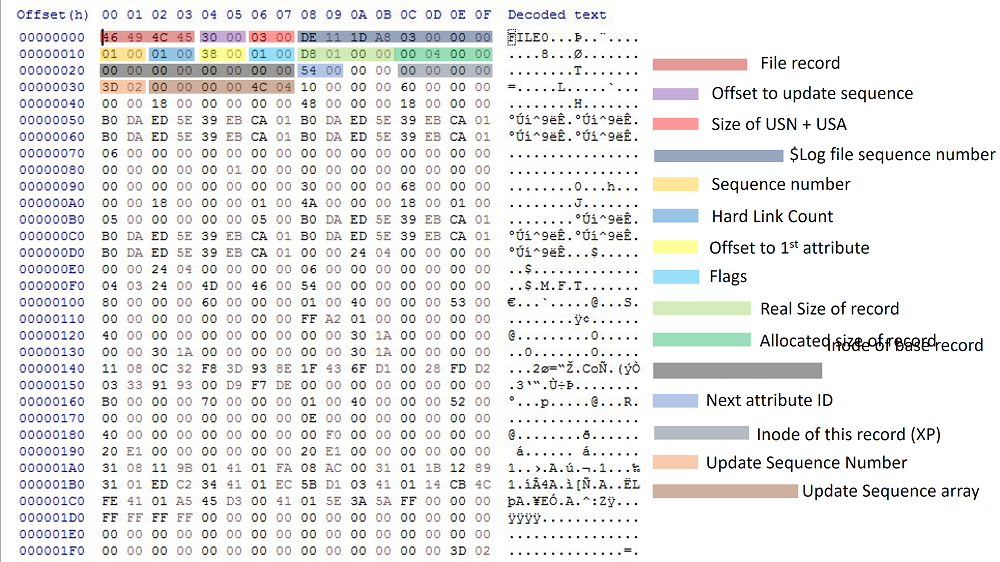
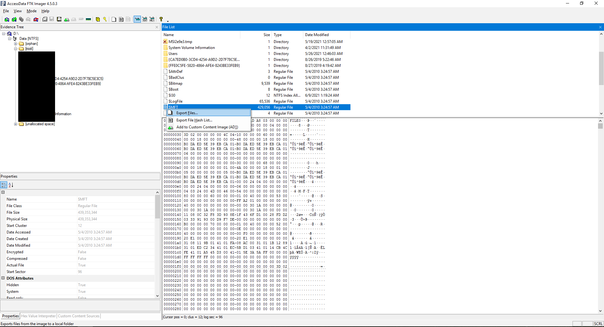

$mft
In an NTFS volume the \$MFT metadata file keeps records of all file entries in the volume.
Note that analysis of a stand-alone \$MFT (versus a full file system analysis) has limitations.
\$MFT
The NTFS file system contains a file called the master file table, or MFT. There is at least one entry in the MFT for every file on an NTFS file system volume, including the MFT itself. All information about a file, including its size, time and date values, permissions, and data content, is stored either in MFT entries, or in space outside the MFT that is described by MFT entries.
The NTFS file system reserves space for the MFT to keep the MFT as contiguous as possible as it grows. The space reserved by the NTFS file system for the MFT in each volume is called the MFT zone. Space for files and directories are also allocated from this space, but only after all of the volume space outside of the MFT zone has been allocated.
The first record of this table describes the master file table itself, followed by an MFT mirror record.
If the first MFT record is corrupted, NTFS reads the second record to find the MFT mirror file, whose first record is identical to the first record of the MFT. The locations of the data segments for both the MFT and MFT mirror files are recorded in the boot sector.
Structure
The master file table allocates a certain amount of space for each file record. The attributes of a file are written to the allocated space in the MFT. Small files and directories (typically 512 bytes or smaller), can entirely be contained within the master file table record.

MFT Record for a Small File or Directory
This design makes file access very fast. Consider, for example, the FAT file system, which uses a file allocation table to list the names and addresses of each file. FAT directory entries contain an index in the file allocation table.
When you want to view a file, FAT first reads the file allocation table and assures that it exists. Then FAT retrieves the file by searching the chain of allocation units assigned to the file. As soon as you look up the file with NTFS, it's there for you to use.
Directory records are housed within the master file table just like file records. Instead of data, directories contain index information.
Small directory records reside entirely within the MFT structure. Large directories are organized into B-trees, have records with pointers to external clusters containing directory entries that could not be contained within the MFT structure.
Location
The \$MFT file is located under the root of each volume and can be extracted using FTKImager.

Also see
External Links
- Master File Table (Local File Systems), by Microsoft
- NTFS Master File Table (MFT), by Ntfs.com
- Parsing the \$MFT NTFS metadata file, by Joachim Metz, April 30, 2020
- Windows Container Forensics, by Jonathan Greig, July 13, 2021
Tools
- analyzeMFT, no longer maintained and has known shortcomings https://github.com/dkovar/analyzeMFT/issues/56
- MFTECmd and MFTExplorer
- Mft2Csv
- MFTDump, no longer maintained
- mft2bodyfile